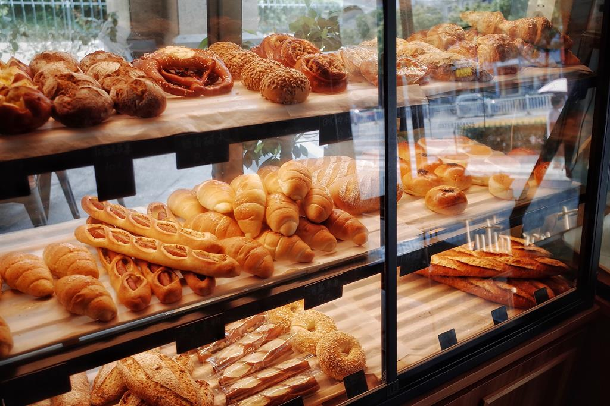
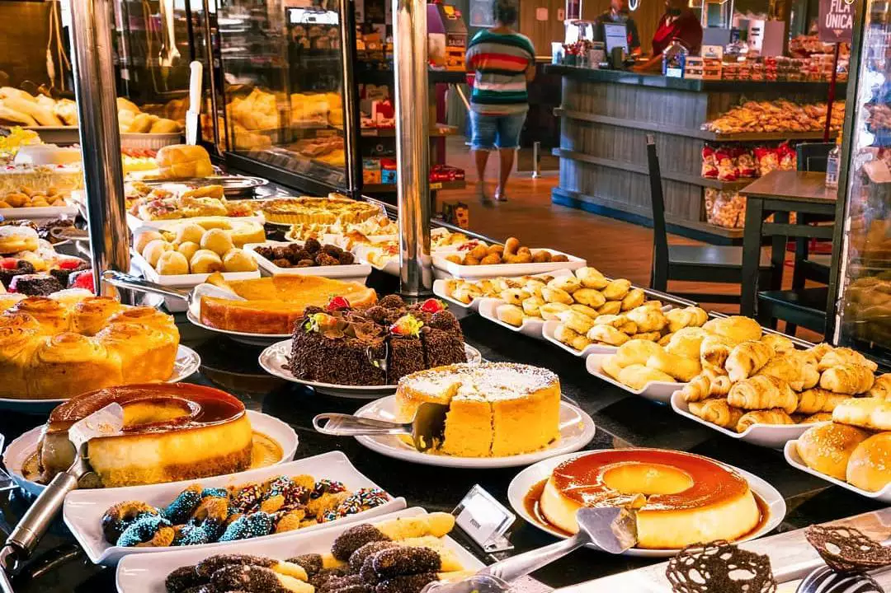
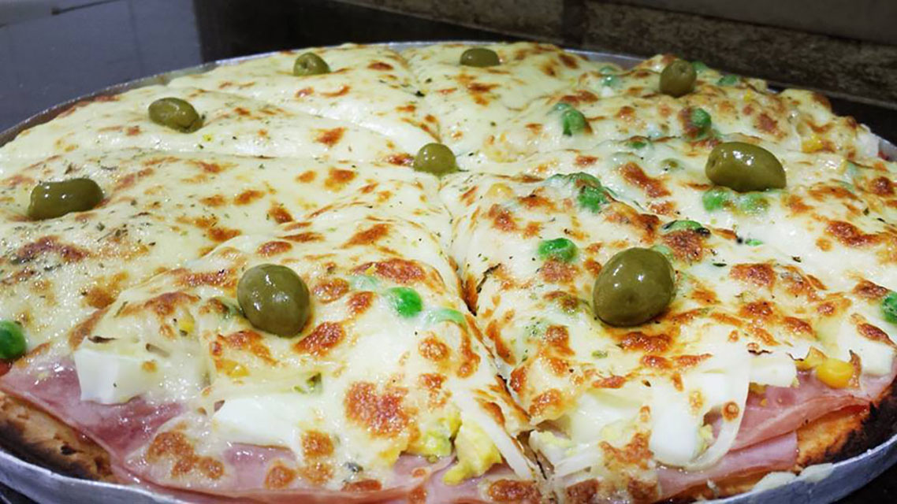

Padaria pão e afeto
A Padaria Pão & Afeto nasceu em 2013 das mãos e do coração de Dona Maria e Seu José, um casal que sempre acreditou que uma boa receita precisa, antes de tudo, de muito amor.
Tudo começou na cozinha de casa, onde o aroma de pão fresquinho acordava a vizinhança todos os dias. O que era um hobby logo virou paixão, e a paixão virou o sonho de uma vida: um lugar onde cada pessoa pudesse se sentir em casa, acolhida por um sorriso e um pãozinho quentinho.
Hoje, a Pão & Afeto continua com o mesmo propósito: fazer com que cada cliente se sinta em casa. Aqui, mais do que vender produtos, queremos proporcionar momentos — seja no café da manhã, no lanche da tarde ou naquele pão quentinho que traz conforto ao final do dia.



